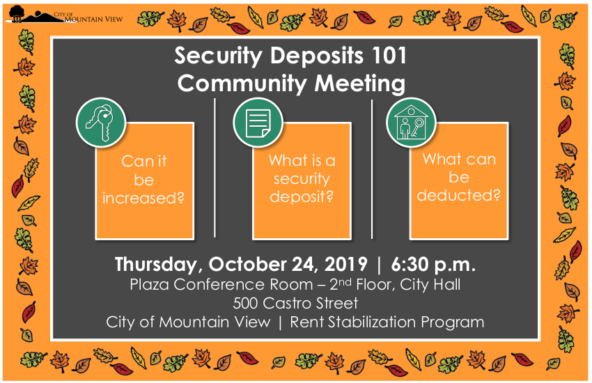
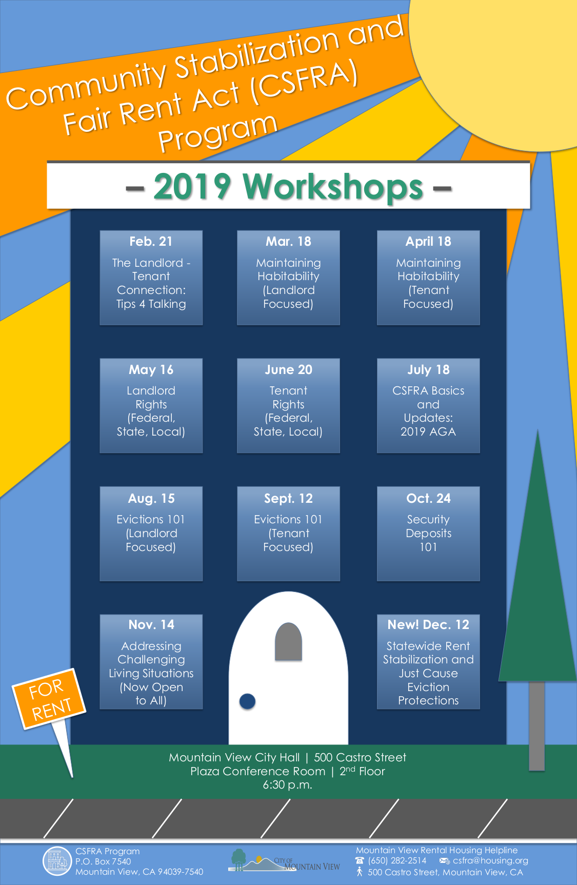
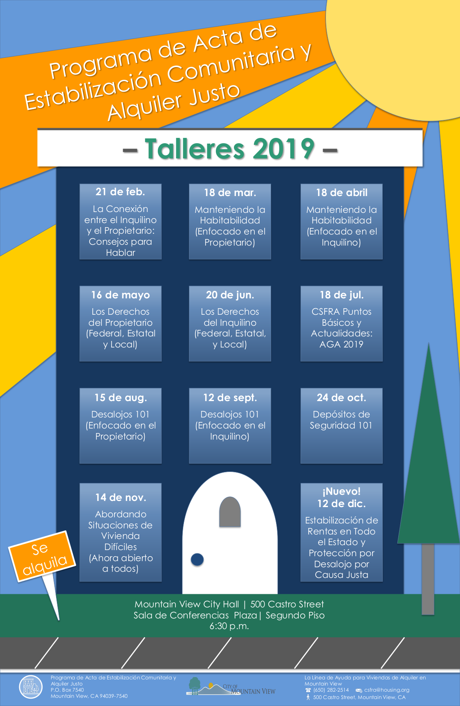
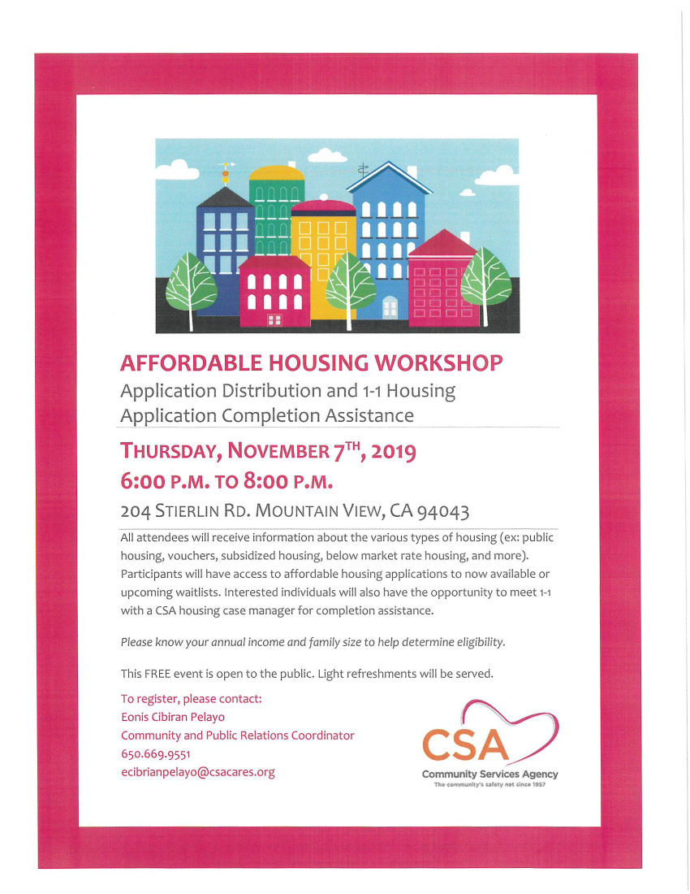
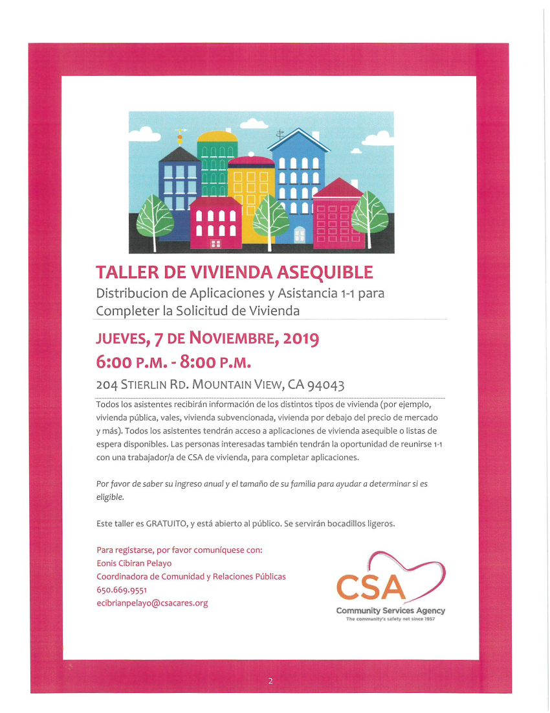
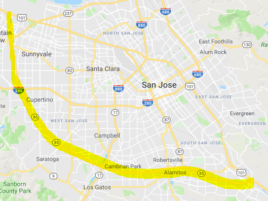

<section>
    <div class="row">
      <div class="large-12 columns">
		<h1>Announcements</h1>
		
		<h4 id="rent">Workshop: Security Deposits 101 </h4>
		<br>
		<p>Thursday, October 24, 2019 – 6:30 p.m. </p>
		<p>City of Mountain View 500 Castro Street – Plaza Conference Room – 2nd floor City Hall</p>
		<p>The Mountain View Rent Stabilization Program will be holding a community workshop on Security Deposits 101 on Thursday, October 24, 2019, 6:30 PM for both Landlords and Tenants. </p>
		<p>Topics include information on Security Deposits and allowable deductions or increases under Mountain View’s Community Stabilization and Fair Rent Act. </p>
		<h5>2019 workshop schedule</h5>
		<div class="large-4 columns"><a href="pdf/workshopalleng.pdf" target="_blank"></a></div>
		<div class="large-4 columns"><a href="pdf/workshopallspa.pdf" target="_blank"></a></div>
		<div class="large-4 columns"><a href="pdf/workshopallman.pdf" target="_blank"></a></div>
		<hr>

		<h4 id="caltrain">Caltrain Electification</h4>
		<p>In Summer 2018, Caltrain began performing work along the railroad corridor in Mountain View. </p>
		<p>The activities during this time included locating underground utilities, testing soil conditions, inspecting signal/communication equipment, potholing, and pruning/removing trees in preparation for the installation and operation of the Overhead Contact System that will power electric trains. </p>
		<p>Caltrain crews will be extending the existing set-out track approximately 500 feet in order to accommodate on-track equipment required for Caltrain Electrification.  The current set-out track is between Farley Street and South Shoreline Boulevard in Mountain View.  Construction will require a staging area for foundation installation, pole installation, construction material and pole delivery and storage as well as for loading and unloading of train cars. The loading and unloading of construction train cars and equipment will require the use of trucks, loading of construction trains and occasional use of backup alarms. Staging is expected to begin in October 2019 with construction occurring over a 8-12 month period. </p>
		<p>Vehicles will enter the staging area off of Central Expressway at Farley Street.  Egress will occur south of South Shoreline Boulevard back onto the Central Expressway. </p>.
		<h5>CONSTRUCTION AREA MAP</h5>
		<br>
		<hr>

		<h4 id="public-charge">Affordable Housing Workshop</h4>
		<div class="large-6 columns"><a href="pdf/CSAHouAppDisEng1.pdf" target="_blank"></a></div>
		<div class="large-6 columns"><a href="pdf/CSAHouAppDisSpa.pdf" target="_blank"></a></div>
		<p><br><br>Application Distribution and 1-1 Housing Application Completion Assistance </p>
		<p>THURSDAY, NOVEMBER 7TH, 2019 <br>6:00 P.M. TO 8:00 P.M. <br>204 STIERLIN RD. MOUNTAIN VIEW, CA 94043 </p>
		<p>All attendees will receive information about the various types of housing (ex: public housing, vouchers, subsidized housing, below market rate housing, and more). Participants will have access to affordable housing applications to now available or upcoming waitlists. Interested individuals will also have the opportunity to meet F-1 with a CSA housing case manager for completion assistance. </p>
		<p>Please know your annual income and family size to help determine eligibility. </p>
		<p>This FREE event is open to the public. Light refreshments will be served. </p>
		<p>To register, please contact: <br>Eonis Cibiran Pelayo <br>Community and Public Relations Coordinator <br><a href="tel:6506699551">650.669.9551</a><br><a href="mailto:ecibrianpelayo@csacares.org">ecibrianpelayo@csacares.org</a></p>
		<p>TALLER DE VIVIENDA ASEQUIBLE <br>Distribucion de Aplicaciones y Asistancia 1-1 para Completer la Solicitud de Vivienda </p>
		<p>JUEVES, 7 DE NOVIEMBRE, 2019 <br>6:00 P.M. - 8:00 P.M. <br>204 STIERLIN RD. MOUNTAIN VIEW, CA 94043 </p>
		<p>Todos los asistentes recibiran informaciOn de los distintos tipos de vivienda (por ejemplo, vivienda publica, vales, vivienda subvencionada, vivienda por debajo del precio de mercado y ma's). Todos los asistentes tendran acceso a aplicaciones de vivienda asequible o listas de espera disponibles. Las personas interesadas tambien tendran la oportunidad de reunirse con una trabajador/a de CSA de vivienda, para completar aplicaciones. </p>
		<p>Por favor de saber su ingreso anual y el tamano de su familia para ayudar a determinar si es eligible. </p>
		<p>Este taller es GRATUITO, y esta abierto al public°. Se serviran bocadillos ligeros. </p>
		<p>Para registarse, por favor comuniquese con: <br>Eonis Cibiran Pelayo <br>Coordinadora de Comunidad y Relaciones Publicas <br><a href="tel:6506699551">650.669.9551</a> <br><a href="mailto:ecibrianpelayo@csacares.org">ecibrianpelayo@csacares.org</a></p>
		<hr>
	
		<h4 id="schools">You’re Invited! Community Engagement Process for Our Local Schools</h4>
		<p>The Los Altos School District (LASD) has initiated a Community Engagement Process to involve the public in formulating a long term facilities plan to house Bullis Charter School (BCS) and ensure a top quality education for all children. </p>
		<p>Whether or not you have children currently attending our schools, LASD values your perspective and welcomes your participation in a process to envision the future of education in our neighborhoods. </p>
		<p>Please join us at one of the upcoming Workshops: </p>
		<p>Saturday, November 2, 9:30-11:30am <br>Egan Junior High School Multipurpose Room <br>100 W. Portola Ave. </p>
		<p>OR </p>
		<p>Monday, November 4, 6:30-8:30pm <br>Blach Intermediate School Multipurpose Room <br>1120 Covington Rd. </p>		
		<p>For more information visit LASD’s <a href="" target="_blank">Community Engagement</a> webpage. Please email <a href="mailto:communityengagement@lasdschools.org" target="_blank">communityengagement@lasdschools.org</a> with any questions. </p>
		<hr>

		<h4>Senior Transportation in Santa Clara County</h4>
        <p>Santa Clara County is currently conducting a transportation needs assessment focused on a few key populations which currently receive some transportation services or support. The needs assessment will be used to guide and improve future service and improvements to the transportation services that the County provides and support (for example, when, to whom, and how the County provides bus passes or taxi vouchers).</p>
		<p>The 5-minute survey is available in English, Spanish, Chinese, and Vietnamese at: <a href="https://tinyURL.com/TransportationSCC" target="_blank">tinyURL.com/TransportationSCC</a><br></p>
		<hr>

		
		<h4 id="mvgo">MVgo Carpool discount</h4>
		<p>A partnership between the Mountain View transit agency and Waze will offer $2 discounted Waze carpool rides. During a six-month pilot program, commuters working in and commuting to Mountain View may join the MVgo Carpool to receive a discounted, flat rate of $2 per carpool ride. In addition, new riders who sign up will get $20 credit, and new drivers will receive $20 cash once it's been verified that they've completed at least one ride and have met Waze Carpool's criteria. </p>
		<p><a href="http://bit.ly/MVgoCarpool" target="_blank">Sign up through the Mountain View Transportation Management Association</a>. </p>
		<hr>
		
		<h4 id="closure">Overnight Lane Closures on Highway 85 Between Bernal Road, San Jose and Interstate 101 Palo Alto</h4>
        <p>
		Starting Monday, July 29, 2019 <br>Caltrans will temporarily close up to two lanes on Highway 85 between Bernal Road, San Jose, and Interstate 101 in Palo Alto for highway maintenance and lane striping. Overnight construction is scheduled to begin the week of July 29 and will be completed by October 2019. Nearby businesses and residents will experience normal construction noise, which will be monitored. Detours will be in place as needed. Work is weather permitting. <figure></figure><br>Overnight Work Schedule and Lane Closures: <br>Northbound:
		 <ul>
		 <li>Monday through Friday: 8:00 PM to 5:00 AM</li>
		 <li>Saturday through Sunday: 6:00 PM to 9:00 AM</li>
		 </ul>
		 Southbound:
		 <ul>
		 <li>Monday through Friday: 8:00 PM to 5:00 AM</li>
		 <li>Saturday through Sunday: 6:00 PM to 9:00 AM</li>
		 </ul>
		 Message and directional signs will be in place to assist motorists traveling in the area.  Motorists are advised to expect delays and allow extra time for their commute. For 24/7 traffic updates, follow 511.org: <a href="https://twitter.com/511SFBAY" target="_blank">https://twitter.com/511SFBAY</a>.  For real-time traffic, click-on Caltrans QuickMap: <a href="http://quickmap.dot.ca.gov/" target="_blank">http://quickmap.dot.ca.gov/</a>.  Or follow Caltrans on Twitter: <a href="https://twitter.com/CaltransD4" target="_blank">https://twitter.com/CaltransD4</a>.</p> <br>
      </div>
    </div>
</section>
